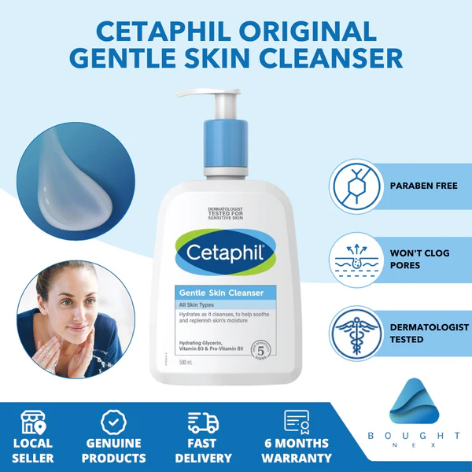

-Facial Products-

Facial Cleanser
Cetaphil Gentle
Skin Cleanser ₱315
A facial cleanser is the first step in every at-home skin care regimen. In addition to removing dirt, dead skin cells, and other unwanted surface debris, a properly formulated facial cleanser can prime your skin for a daily skincare routine, acne treatment, and other skin care products.


Facial Sunscreen
LUXE ORGANIX
Aqua Daily Sunscreen ₱349
Wearing sunscreen is one of the best — and easiest — ways to protect your skin's appearance and health at any age. Used regularly, sunscreen helps prevent sunburn, skin cancer and premature aging. To help make sunscreen a part of your daily routine.